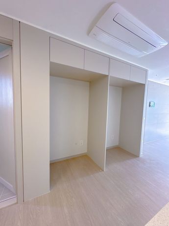
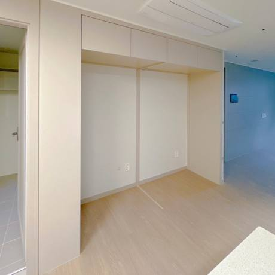
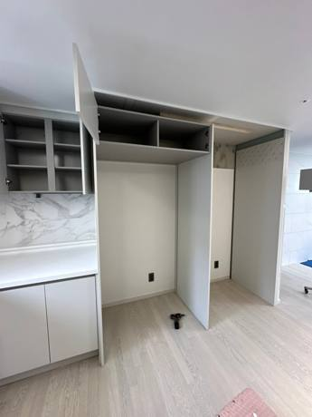
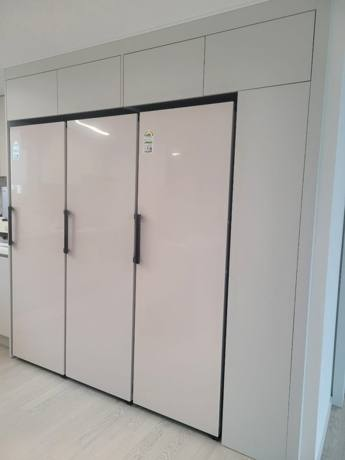
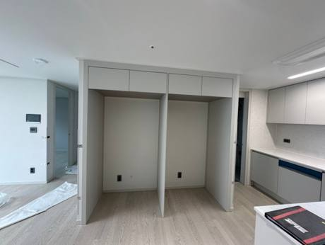
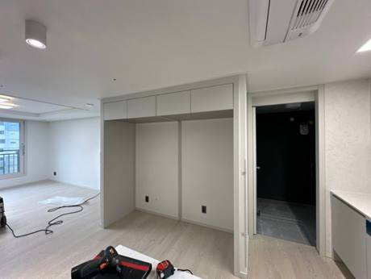

서산 출장
1+1+1·4도어 자리 만들기 · 30만원, 대표가 직접 재고 짜서 설치해요.
옵션 냉장고장 가운데 세로 기둥 때문에 냉장고 두세 대를 나란히 못 넣는 경우가 많아요. 기둥만 빼고 상부장을 보강하면 1+1+1이나 4도어 냉장고가 들어갈 폭이 나와요. 장 전체를 새로 짤 필요가 없어요.
서산도 내포에서 가까워 함께 일정을 잡아요. 냉장고 모델에 맞춘 키친핏 냉장고장 맞춤제작부터 칸막이 제거까지 해요.
서산 냉장고장 기둥 제거
냉장고 구성에 맞춰 칸을 다시 나눠요. 김치냉장고까지 네 대를 나란히 넣은 현장도 있어요.
가운데 기둥을 빼고 상부장과 천장을 보강해요.
옵션 냉장고장 틀은 그대로 두고 필요한 부분만 바꿔요.
대부분 하루 안에 끝나고 그날 냉장고를 넣어요.
가까운 지역 대표 현장
대전 서구 용문동 둔산더샵엘리프 1단지


신축아파트 옵션 냉장고장이 일반 양문형 냉장고 규격에 맞춰 두 칸으로 나뉘어 있었어요. 새로 산 LG 오브제 키친핏 냉장고를 설치하려면 가운데 칸막이를 없애야 했어요.
LG 오브제 키친핏 냉장고를 넣을 수 있는 자리가 생겼고, 이사 일정에 맞춰 작업을 마쳤어요.
“이사 일정 때문에 무리하게 작업을 부탁드렸는데 최대한 맞춰서 작업해주셔서 너무 너무 감사합니다!!”고객님 후기
진행 순서
옵션 냉장고장의 큰 틀은 그대로 두고 가운데 칸막이만 철거하기로 했어요.
칸막이가 상부장 무게를 받치던 지지대라서 상부장과 천장에 2단 보강을 했어요.
보강을 마친 뒤 칸막이를 제거해 냉장고 자리를 만들었어요.
실제 현장


입주 전에 산 냉장고가 기둥 때문에 붙지 않던 현장.


2025년 3월 준공 신축. 칸막이를 빼고 네 대를 나란히.
칸막이·기둥 제거 리폼 30만원 (VAT 별도). 사진을 보고 우리 집 금액을 알려드려요. 비용 자세히 보기
자주 묻는 질문
네. 서산 냉장고장 기둥 제거 상담부터 실측, 시공, AS까지 대표가 직접 가요. 사진과 아파트 이름을 문자로 보내 주시면 일정과 금액을 함께 알려드려요.
기둥이 받치던 무게만큼 상부장과 천장을 보강해요. 처짐·기울어짐은 평생 무상 AS예요.
현장 사진 2~3장, 냉장고 모델명, 아파트 이름을 문자로 보내 주세요. 작업 중엔 전화를 못 받을 때가 많아 문자가 가장 빨라요.
현장 사진, 동네, 하고 싶은 일을 문자로 보내주세요. 작업 중엔 전화를 못 받을 때가 많아 문자가 가장 빨라요.